地政学
ハノイは党、政府、国会、外交機関、軍の記憶が集まる首都です。中国国境、紅河デルタ、南シナ海問題を意識しながら、国内統治と国際投資を調整する場であり、国家儀礼と生活が同じ街路に現れます。外交緊張も宿る。

🇻🇳 ベトナム / 東南アジア / World City Atlas
紅河デルタの首都です。湖、旧市街、官庁街、工業団地、大学、寺院、社会主義国家の記憶が重なり、政治、製造業、生活文化、観光が近い距離で動いています。
都市の骨格
ハノイは旧市街の細い街路、ホアンキエム湖、フランス植民地期の並木道、紅河沿いの物流、郊外工業団地が連続する都市です。政治の中心でありながら、路上の商いと生活の密度が首都の印象を作ります。
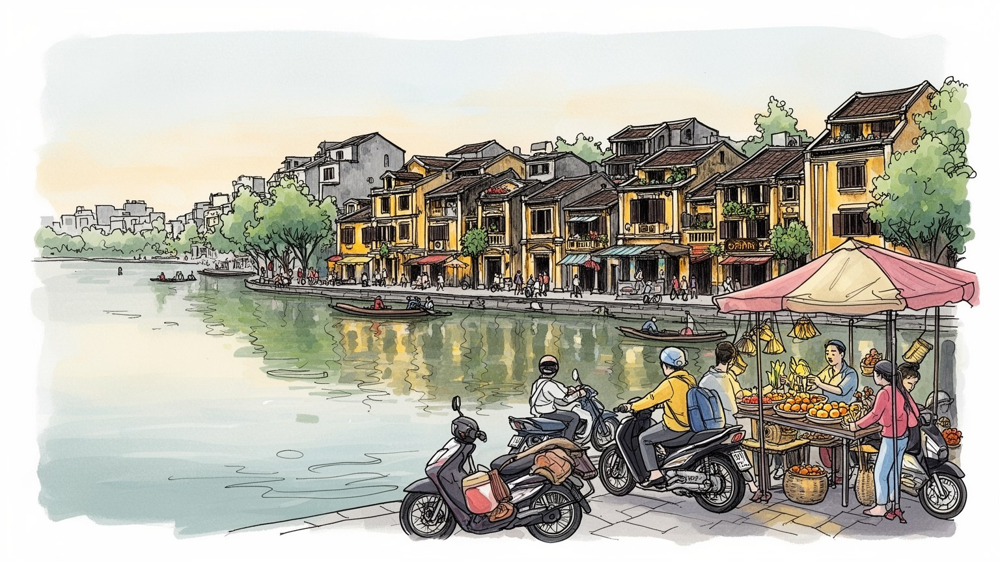
ハノイは党、政府、国会、外交機関、軍の記憶が集まる首都です。中国国境、紅河デルタ、南シナ海問題を意識しながら、国内統治と国際投資を調整する場であり、国家儀礼と生活が同じ街路に現れます。外交緊張も宿る。
行政、教育、研究、観光、飲食に加え、周辺工業団地では電子部品、縫製、機械、物流が伸びます。中心のサービス労働と郊外の工場労働が通勤圏で結ばれ、若い労働者の住まいと賃金が課題です。通勤時間にも響く。
文廟、寺院、祖先祭祀、仏教、道教、民間信仰が生活の節目を支えます。旧市街の商業、カフェ、麺料理、水上人形劇、文学、大学文化は、国家の首都である前に家族と地域の記憶を残します。学びの場にも響きます。
湖畔散歩、屋台、バイク、路上市場、集合住宅、郊外団地が日常を作ります。観光客は旧市街や博物館を巡りますが、住民には渋滞、大気汚染、住宅価格、洪水、猛暑が身近な問題として重なります。家計にも重く響く。
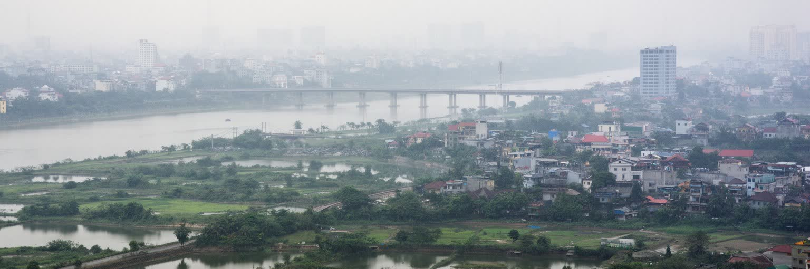
ハノイの都市構造は、紅河デルタの低地、湖、堤防、古い街路、郊外へ伸びる幹線道路によって形作られています。ホアンキエム湖は観光の象徴であると同時に、旧市街と官庁街をつなぐ都市の目印であり、西湖の周辺には住宅、外交施設、外資系の店、若い専門職の生活が広がります。紅河沿いには市場、物流、集落、農地の記憶が残り、低地の都市であるため、豪雨、排水、浸水、湿気は日常の条件になります。道路が広がり高層住宅が増えても、水の流れと堤防の位置は都市の安全を左右します。ハノイを読むには、湖畔の美しさだけでなく、川沿いの暮らし、排水路、橋、郊外へ向かう通勤を同じ地図に置く必要があります。都市の拡大は農村と都市の境界を曖昧にし、土地利用、補償、環境負荷をめぐる緊張も生みます。古い村落が市街地にのみ込まれる過程では、共同墓地、寺、祭礼、農地の水路が新しい道路や住宅地の中に残ります。地形は消えるのではなく、土地の名前、路地の曲がり方、雨の日の水たまりとして現れます。紅河デルタの首都であることは、水と近く生きる便利さと危うさを抱えることでもあります。橋の増設や環状道路は移動を速くするが、川の両岸で土地価格や生活圏を大きく変えます。水田、池、低湿地が住宅地へ変わるほど、雨を受け止める余地は減り、都市計画は水を排除するのではなく、水と折り合う技術として問われます。
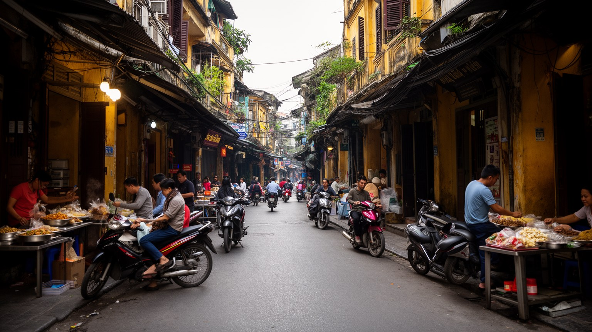
ハノイ旧市街は、細い街路、低い間口、奥へ長い家、商店、宿、屋台、バイク、歩行者が重なる高密度の生活空間です。通りごとに職能や商品名の記憶が残り、金物、布、紙、薬、食材、土産物、カフェ、旅行代理店が混在します。観光客には迷路のように見えても、住民には仕入れ、配達、食事、家族経営、近所づきあいの細かな秩序があります。歩道は単なる歩行空間ではなく、調理、販売、修理、休憩、駐車、会話が行われる都市の作業台です。そのため歩きやすさ、衛生、消防、観光の混雑、住民の生業はしばしば衝突します。再開発やホテル化は収入を増やす一方、古い住民や小さな店の居場所を狭めます。旧市街を保存するとは、建物の外観を残すだけでは足りません。商品を運ぶ人、朝の市場、路地裏の台所、家族の住まい、職人の技術、観光客を迎える店が共存できる条件を守ることが必要です。夜の照明や朝の荷ほどきも、商業の時間を細かく刻むのです。旧市街の価値は、古い景観だけでなく、生活と商売が同じ狭い空間を分け合う技術にあります。消防車が入りにくい路地、老朽建物、観光バスの流入、短期宿泊の増加は、魅力と危険を同時に大きくします。都市の記憶を守るには、歩く人だけでなく住み続ける人の台所、寝室、仕事場まで視野に入れなければなりません。小さな修理屋や食材店が残るかどうかは、住民の都市としての旧市街を測る目安になります。
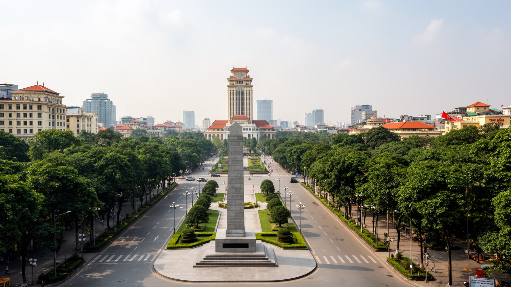
ハノイはベトナムの首都として、党、政府、国会、外交機関、軍の記憶が近距離に集まる都市です。ホーチミン廟、バーディン広場、官庁街、博物館、記念碑は、独立、社会主義、戦争、統一の物語を都市空間に刻むのです。政治は抽象的な制度だけでなく、式典、国旗、警備、学校教育、記念日の行事として街に現れます。同時に、ハノイの首都性は堅い儀礼だけではありません。旧市街の商い、大学の議論、カフェでの会話、家族の祖先祭祀も、国家の歴史を日常の言葉へ変えます。中国との歴史的関係、南シナ海をめぐる緊張、ASEANや世界市場との接続は、首都の外交感覚を作ります。外国大使館、国際機関、開発援助、留学生、企業代表部もこの首都性を補強します。政策の言葉は工業団地、学校、住宅地、観光地へ波及し、道路整備や土地利用の判断として住民に届きます。ハノイの政治空間は、記念碑を眺める場所ではなく、国家の方針が生活条件へ変わる過程を観察する場所です。土地収用、交通投資、環境規制、工業団地の誘致は、首都の会議室で語られた後、郊外の村や市場の価格として現れます。権力の景観と日常の交渉が近いことが、この都市の緊張と粘り強さを作っています。首都で働く公務員、警備員、清掃員、運転手、記者、通訳の仕事も、制度を毎日動かす現場です。国家の中心は巨大な広場だけでなく、その周囲の食堂や停留所にも広がっています。
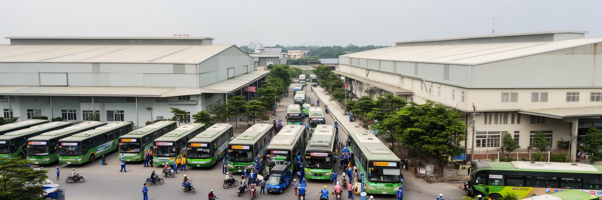
ハノイの経済は行政と観光だけではありません。大学、研究機関、IT企業、建設、飲食、医療、教育が中心部を支え、周辺には電子部品、機械、縫製、食品加工、物流の工業団地が広がります。外国投資は雇用を増やし、若い労働者を農村部から呼び込むが、賃金、寮、通勤、労働時間、技能形成の問題も同時に生みます。工場で作られる部品や衣料は世界のサプライチェーンに入り、首都の政策判断と郊外の現場労働が強く結びつきます。中心部では観光客向けの飲食、ホテル、配車、清掃、ガイド、土産物販売が増え、英語やデジタル決済への対応も仕事の条件になります。都市の成長を数字で見るだけでは、朝早く工場へ向かうバス、深夜の屋台、配達員、建設労働者の時間が見えません。地方から来た若者にとって、寮や賃貸住宅の質、家族への送金、結婚後の住まい、子どもの教育は都市に残れるかを左右します。工業化の成功は輸出額だけでなく、技能を高めて次の仕事へ移れる経路があるかにも表れるのです。非公式な屋台や家族商店も雇用の受け皿であり、規制が強まると生活費の安さや働く入口が揺らぐのです。ハノイの労働を見ることは、企業誘致の成果と、毎日の食事を支える小さな仕事の両方を読むことです。賃金が上がっても家賃、通勤、教育費が同時に上がれば、成長の手応えは薄くなります。産業政策は、働く人が健康に住み続けられる都市政策と切り離せません。
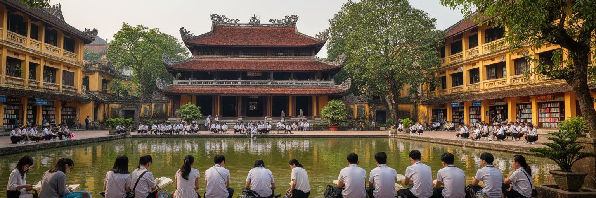
ハノイの文化は、国家の首都性と教育の記憶が重なるところに厚みを持ちます。文廟は科挙と学問の象徴として観光客を集めるが、試験、進学、家族の期待、教師への尊敬が今も都市の生活に深く関わります。大学、研究機関、出版社、劇場、博物館、カフェ、書店は、政治都市に柔らかな議論と学びの場所を与えるのです。水上人形劇や伝統音楽は観光の演目であると同時に、紅河デルタの村落文化を都市へ運ぶ回路でもあります。フランス植民地期の建築、社会主義期の記念碑、新しい商業施設が近接するため、街を歩くと歴史の層が短い距離で切り替わるのです。若い世代は海外文化やデジタルメディアを取り込みながら、家族行事や学校の儀礼にも参加します。文化は古いものがそのまま残るのではなく、都市生活に合わせて使い直されます。ハノイの教育文化を読むには、名所としての文廟だけでなく、早朝の塾、大学周辺の食堂、学生の下宿、図書館、卒業写真を撮る湖畔まで見る必要があります。学びへの期待は上昇志向を支える一方、教育費や就職競争の負担も家庭に戻ってくるのです。文化施設が増えるほど、誰が入場料を払い、誰が余暇の時間を持てるかも問題になります。首都の知的な顔は、学生、教師、司書、編集者、店主、家族の支えによって日々保たれています。古い校舎や並木道が撮影の背景になる一方、そこは通学と研究の実用空間でもあります。文化の厚みは、見せる景観と使う日常が重なることで生まれます。
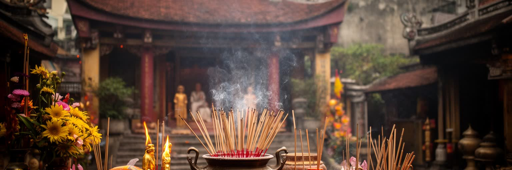
ハノイの信仰は、仏教、道教、儒教的な倫理、祖先祭祀、民間信仰が重なり、家族と地域の時間を整える働きを持ちます。寺院や祠は観光地である前に、近所の人が合格、商売、健康、家族の安寧を祈る場所です。旧正月、命日、墓参り、家の祭壇への供え物は、忙しい都市生活の中でも世代をつなぎ、地方出身者にとっては出身地との関係を保つ手段になります。商店街では開店前の供え物や線香が路上の商いと混ざり、湖畔や旧市街の小さな祠は都市の記憶を静かに支えます。信仰は大きな宗教施設の内部だけでなく、食卓、路地、学校、職場の判断にも入り込むのです。近代化が進むほど、こうした儀礼は消えるのではなく、時間を短くしながらも生活の節目として残ります。ハノイの宗教を読むことは、建築の美しさを見るだけでなく、誰がどのように祈り、家族の義務を引き受け、都市の孤立を和らげているかを見ることです。観光客には静かな寺院が印象に残りますが、住民にとっては日常を壊さずに祖先と向き合う実用的な場所でもあります。都市へ移った若者も、旧正月には実家へ戻り、贈り物や供え物を通じて親族関係を確認します。信仰の継続は、急速な都市化の中で人が自分の出自を見失わないための生活技術でもあります。再開発で祠や墓地が移される時、住民は単に土地を失うのではなく、記憶へ戻る道筋も失うのです。儀礼の場所をどう残すかは、都市更新の細部に関わります。
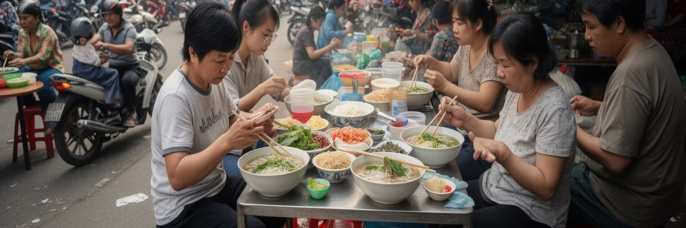
ハノイの食文化は、観光の楽しみである前に、都市の時間割を支える日常の装置です。朝のフォー、昼のブンチャー、バインミー、コム、エッグコーヒー、小さな椅子の並ぶ歩道は、住民の食事、商売、休憩、会話の場になります。路上の調理は仕込み、炭火、皿洗い、配達、現金とデジタル決済、清掃まで含む細かな労働で成り立つのです。観光客は旧市街の食を都市の魅力として味わうが、その同じ路地は住民の朝食、学生の昼食、配達員の休憩、家族経営の収入源でもあります。食の人気が高まるほど、家賃上昇、歩道の混雑、衛生規制、観光向けの演出が生まれ、日常食との距離が広がることもあります。ハノイを食から読むと、紅河デルタの米文化、家族の台所、都市労働、外国人観光、若者のカフェ文化が一つにつながります。小さな椅子で食べる一杯の麺は、安さと近さだけでなく、都市が公共空間をどのように分け合ってきたかを示します。食文化を守ることは、味を保存するだけでなく、働く人が続けられる家賃、仕入れ、衛生、休息の条件を守ることでもあります。早朝の市場、夜の片付け、家族内の調理分担まで含めると、食は観光商品ではなく都市労働の燃料です。皿の上の香草とスープには、農村、物流、路地の時間が重なっています。店が観光客向けに変わっても、住民が毎朝通える価格と距離が残るかどうかが食の都市性を決めます。味の記憶は、家計と歩道の使い方にも支えられています。
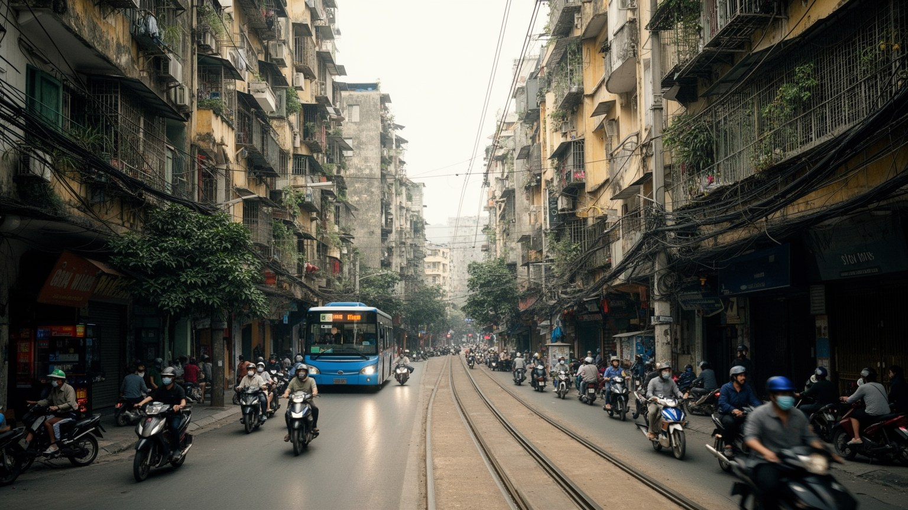
ハノイの暮らしは、旧市街の細い住宅、フランス植民地期の並木道、社会主義期の集合住宅、新しい高層マンション、郊外の戸建てが同時に存在することで成り立つのです。中心部では住居と商店が重なり、家族経営の店では居間、台所、倉庫、接客の場所が近接します。郊外では大型マンションとショッピングモールが増え、若い家族や専門職が新しい生活圏を作りますが、学校、保育、病院、通勤時間、管理費が家計に影響します。バイクは家族の送迎、通勤、配達、商売、買い物を支える柔軟な交通手段であり、同時に渋滞と大気汚染の原因にもなります。都市鉄道の整備は混雑を減らす期待を集めるが、駅までの移動、運賃、既存のバスとの接続が課題になります。住宅価格の上昇は、中心部に長く住む人や若い労働者を遠くへ押し出すのです。ハノイの住宅問題を読むには、建物の新しさだけでなく、どこで働き、どこで食べ、どこで子どもを預け、災害時にどこへ避難できるかを見る必要があります。住まいと移動は別々の問題ではなく、生活の尊厳を決める同じ条件です。歩道が駐車や商売で埋まると、子どもや高齢者の移動は難しくなります。便利な都市を作るには、速い道路だけでなく、日陰のある歩道、雨を避けられる停留所、手頃な家賃が必要になります。都市鉄道が伸びても、駅の周辺に生活費の高い住宅だけが並べば、公共交通の恩恵は限られるのです。移動の公平さは、住宅政策と一緒に測られるべきです。
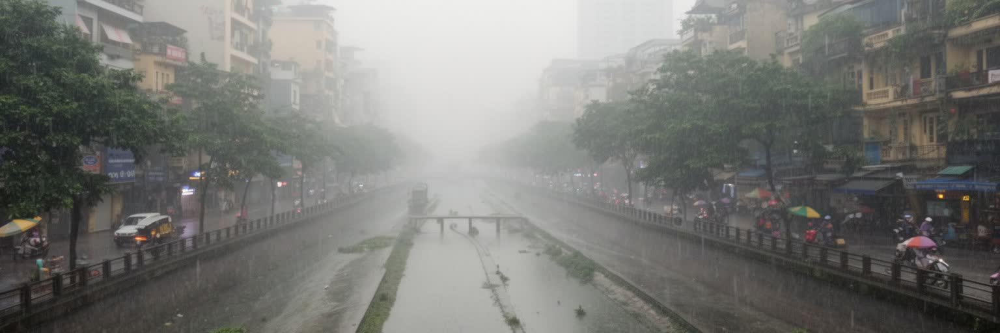
ハノイの急成長は、都市の便利さを高める一方で、大気汚染、渋滞、騒音、廃棄物、浸水、住宅価格の上昇を強めています。乾季の粉じんや排気、建設現場の多さ、バイクと自動車の増加は、子ども、高齢者、屋外で働く人に大きな負担をかけるのです。豪雨時には低地の排水が追いつかず、道路や住宅地が水に弱いこともあります。都市の拡大で農地や湿地が減ると、水を受け止める余地も小さくなります。環境問題は自然保護だけではなく、誰が汚れた空気を吸い、誰が遠くから通勤し、誰が浸水しやすい場所に住むかという社会問題です。ハノイが住み続けられる首都であるためには、公共交通、排水、緑地、手頃な住宅、労働者保護、医療、学校を同時に整える必要があります。公園、街路樹、湖の水質、日陰のある歩道は、見た目の飾りではなく暑さと疲労を和らげる公共資産です。工場や建設の利益が都市へ入るなら、労働者の健康、住民の呼吸、子どもの遊び場にも投資が戻る必要があります。環境の質は、都市が成長の負担をどれだけ公平に分けられるかを示します。気候変動で雨の強さや暑さが増すほど、低所得の住宅地や屋外労働者ほど影響を受けやすいです。湖をきれいに保ち、排水を直し、涼める公共空間を増やすことは、首都の競争力そのものになります。短時間の冠水でも学校、病院、配送、観光は止まり、損失は家計へ戻ります。水と空気の管理は、都市の見えにくい安全保障です。
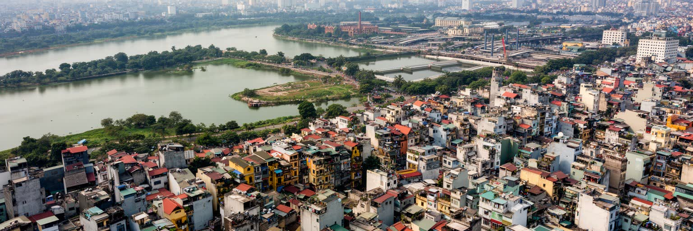
ハノイは、世界的な金融中心ではありませんが、ベトナムという成長国を理解するうえで欠かせない都市です。首都の政治機能、独立と戦争の記憶、紅河デルタの地形、旧市街の商業、郊外工業団地、大学、寺院、湖畔の生活が近い距離で重なります。南部のホーチミン市が商業と国際ビジネスの速度を強く見せるのに対し、ハノイは国家の制度、歴史の正統性、文化の連続、慎重な都市更新を示します。街路にはバイクと屋台の即興性があり、広場や記念碑には国家の秩序があります。この二つが同じ都市で共存する点に、ハノイの重要性があります。観光地としての魅力だけでなく、労働者の移動、住宅価格、環境負荷、宗教と祖先祭祀、若い世代の教育、国際投資の受け入れ方を見ると、首都の輪郭はより立体的になります。ハノイを読むことは、急成長する東南アジア都市が、歴史を残しながら市場経済、国家管理、生活の密度をどう調整しているのかを読むことです。湖の周りの穏やかな風景の裏には、成長の速度と暮らしの安全をどう両立するかという大きな課題があります。ハノイの価値は、古い通りを絵として残すことだけではなく、そこで働き、祈り、学び、子どもを育てる人が都市に残れる条件を作ることにあります。首都の威信と路上の生活を同時に読める点が、この都市を世界地図の中で重要にしています。政治、食、信仰、工業、住宅を別々に見るだけでは足りません。それらが同じ湖畔、同じ橋、同じバイクの流れで接続されるところに、ハノイの都市としての核心があります。